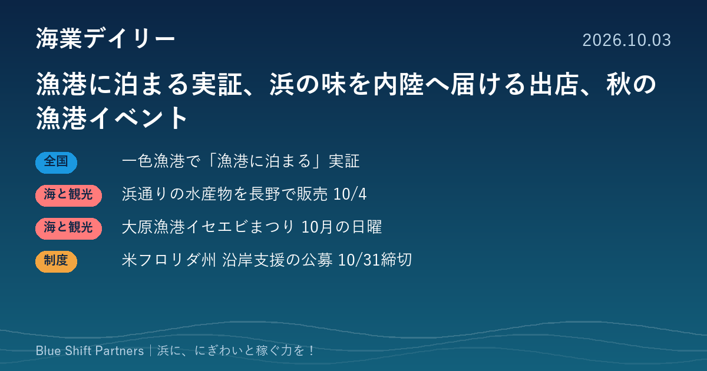

2026.10.03
漁港に泊まる実証、浜の味を内陸へ届ける出店、秋の漁港イベント

愛知県の一色漁港で、トレーラーハウスを使った宿泊の実証が始まり、多くの応募を集めています。福島・浜通りの水産物を長野の秋まつりで販売する取り組みや、千葉・大原漁港のイベントもご紹介します。海外からは、米国フロリダ州の「働く水辺」を含む沿岸支援の公募です。
愛知・一色漁港でトレーラーハウス宿泊の実証、10月分に248組の応募
ソラナリゾート株式会社が、愛知県西尾市の一色漁港（一色さかな広場の隣接地）で、トレーラーハウスを使った宿泊の実証プロジェクトを行うと発表しました。1日1組・最大5名の一棟貸しで、キッチンやBBQグリル、ドッグランを備えています。第1期の10月宿泊分には248組の有効応募があり、11月宿泊分の募集も行われています。
ここがポイント：建物を新築せずに、移動できる客室で漁港の空きスペースを宿泊に活かす試みです。市場や食堂と組み合わせて滞在時間を延ばす手法として、漁協や自治体の参考になります。
出典：ソラナリゾート株式会社（PR TIMES）（2026-10-02）
福島・浜通りの水産物を長野の秋まつりで販売、10月4日に出店
福島相双復興推進機構は、10月4日（日）に長野市の「善光寺表参道秋まつり」で、福島県浜通りの水産物を販売する「ふくしま常磐大漁市」を出店すると発表しました。シウマイなどの調理品や水産加工品の販売、試食、イートインを用意します。浜通りの水産仲買・加工事業者を支援する事業の一環です。
ここがポイント：海のない県の人出の多い祭りに出向いて、浜の味を知ってもらう販路づくりの例です。加工品の試食と販売を組み合わせ、産地の名前を覚えてもらう場として活用できます。
出典：公益社団法人 福島相双復興推進機構（PR TIMES）（2026-10-01）
千葉・大原漁港「いすみイセエビまつり」、10月の毎週日曜に開催
千葉県いすみ市の大原漁港で、港の朝市会場を舞台にした「第9回 2026いすみイセエビまつり」が、8月から10月までの毎週日曜日を中心に開かれています。時間は8時から12時30分までで、イセエビが当たるビンゴ大会やイセエビのつかみどりが行われます。入場は無料です。
ここがポイント：地元の特産品を主役にした体験型の催しを、朝市の会場で3か月にわたり続けている例です。朝市の常連づくりと、季節ごとの来訪の動機づけを同時にねらえます。
出典：ちば観光ナビ（千葉県公式観光サイト）「第9回 2026いすみイセエビまつり／大原漁港」（2026-10-03）
米国フロリダ州、「働く水辺」などを支える沿岸支援の公募を10月末まで受付
米国フロリダ州環境保護局の沿岸管理プログラムは、地域の沿岸管理事業を支える「コースタル・パートナーシップ・イニシアチブ」の2027〜28年度分の申請を、2026年9月1日から10月31日まで受け付けています。対象分野は、災害に強い地域づくり、水辺へのアクセス、漁業や港湾などの「働く水辺（ワーキング・ウォーターフロント）」、沿岸環境の保全の4つです。沿岸の郡や市町村、大学、非営利団体などが申請でき、地元の自治体が関わることが条件です。
ここがポイント：漁業や港の仕事が続く水辺を、観光や環境と並ぶ柱として公的に支える考え方は、日本の海業の推進とも重なります。地域づくりの補助の組み立て方の参考になります。
出典：フロリダ州環境保護局（アメリカ）「Grants（Florida Coastal Management Program）」（2026-06-16）
漁港の空きスペースは、建物を建てなくても、移動できる客室や朝市の催しで「人が来て、泊まって、買う」場所に変えられます。まずは小さく試して反応を数で確かめる、一色漁港の進め方は、どの浜でも取り入れやすい手順です。